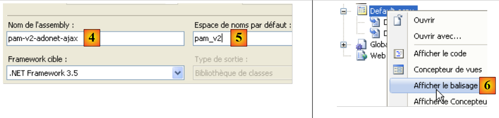
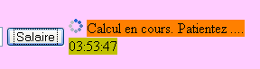

5. The [SimuPaie] application – version 2 – AJAX / ASP.NET
5.1. Introduction
AJAX (Asynchronous JavaScript and XML) technology combines a set of technologies:
- JavaScript: An HTML page displayed in a browser can embed JavaScript code. This code is executed by the browser if the user has not disabled JavaScript execution in their browser. This technology has been around since the early days of the web and has seen a resurgence of interest since 2005 thanks to AJAX.
- DOM: Document Object Model. The JavaScript code embedded in an HTML page has access to the document in the form of an object tree, the DOM. Each element of the document (an input field, a named div tag, a select tag, etc.) is represented by a node in the tree. JavaScript code can change the displayed document by modifying the DOM. For example, it can change the text displayed in an input field via the DOM node representing that field.
AJAX uses JavaScript to perform browser/server exchanges in the background. To respond to an event such as a button click, JavaScript code is executed by the browser to send an HTTP request to the server. This request contains parameters telling the server what to do. The server then executes the requested action. In response, it sends the browser an HTTP stream containing data that enables a partial update of the currently displayed page. This is carried out via the document’s DOM and the execution of JavaScript code embedded in the document. The data returned by the server can be in various formats: XML, HTML, JSON, plain text, etc.
The benefit of this technology lies in this partial update of the displayed document. This means:
- less data exchanged between the client and the server, resulting in a faster response
- a more fluid graphical interface to use, as user actions do not trigger a full page reload.
In an intranet where network traffic is fast, AJAX enables the creation of web applications that behave similarly to traditional Windows interfaces. It is possible to handle events such as a selection change in a list and immediately and partially refresh the page to reflect that change. The fact that the page is not fully reloaded gives the user the same sense of fluidity they experience with Windows applications. For web applications, where response times can be long, AJAX technology remains usable, but the perceived fluidity depends on the network’s performance.
The main challenge with AJAX is the JavaScript language. Created in the early days of the web,
- it proves impractical for object-oriented programming. For example, it is not a typed language. You do not declare the type of the data being manipulated. In this respect, it is similar to languages such as Perl or PHP.
- There is no standard accepted by all browsers. Each browser has its own proprietary JavaScript extensions, which means that JavaScript code written for Internet Explorer may not work in Mozilla Firefox, and vice versa.
- It is difficult to debug, as browsers do not offer powerful tools for debugging the JavaScript code they execute.
All these shortcomings of JavaScript meant that it was rarely used before the advent of AJAX. Once the value of executing JavaScript code in the background—to make HTTP requests to the web server and use its response to perform, via the DOM, a partial update of the displayed document—was understood, development teams set to work and proposed frameworks that enable AJAX without requiring the developer to write JavaScript code. To achieve this, JavaScript libraries capable of adapting to the client browser were developed. The insertion of JavaScript code into the HTML page sent to the browser is performed on the server side, using techniques that vary depending on the AJAX framework used. AJAX frameworks are available for Java, .NET, PHP, Ruby, and more. AJAX is integrated into Visual Web Developer 2008.
5.2. The Visual Web Developer project in the [ web-ui-ajax] layer
The new version is created by duplicating the previous version. Only the [Default.aspx] page will be modified.
 |
- In [1], using Windows Explorer, duplicate the project folder [pam-v1-adonet] and rename it [pam-v2-adonet-ajax]. Then, using Visual Web Developer, open the project (File / Open Project) from this new folder [2]
- In [3], rename it
 |
- In the new project’s properties, change the assembly name [4] and the default namespace [5].
Once this is done, replace the namespace [pam_v1] with the namespace [pam_v2] in the files [Default.aspx, Default.aspx.cs, Default.aspx.designer.cs, Global.asax, Global.asax.cs] to ensure consistency with the default namespace. For example, [Default.aspx] [6] becomes:
<%@ Page Language="C#" AutoEventWireup="true" CodeBehind="Default.aspx.cs" Inherits="pam_v2._Default" %>
...
The [ Default.aspx] page will be modified as follows:
 |
- Addition of Ajax components to the [Default.aspx] form (see [2] above).
- 2A: The <asp:ScriptManager> component is required for any AJAX project
- 2B: The <asp:UpdatePanel> component is used to define the area to be refreshed when the user submits a POST request. This component prevents the entire page from reloading.
- 2C: The <asp:UpdateProgress> component is used to display text or an image during the update to notify the user, as shown below:
 |
- (continued)
- 2D: A Label control named LabelHeureLoad that will display the time at which the page’s Load event handler runs.
- 2E: A Label named LabelHeureSalaire that will display the time at which the Click event handler for the [Salaire] button is executed. We want to demonstrate that Ajax does not reload the entire page when the [Salaire] button is clicked. This is shown in the previous screenshot, where two different times can be seen in the two Labels.
The previous Ajaxification of the form can be done directly in the source code of [Default.aspx] by adding Ajax extension tags:
...
<body style="text-align: left" bgcolor="#ffccff">
<h3>
Feuille de salaire
<asp:Label ID="LabelHeureLoad" runat="server" BackColor="#C0C000"></asp:Label></h3>
<hr />
<form id="form1" runat="server">
<asp:ScriptManager ID="ScriptManager1" runat="server" EnablePartialRendering="true" />
<asp:UpdatePanel runat="server" ID="UpdatePanelPam" UpdateMode="Conditional">
<ContentTemplate>
<div>
<table>
<tr>
...
<tr>
<td>
<asp:DropDownList ID="ComboBoxEmployes" runat="server">
</asp:DropDownList></td>
<td>
<asp:TextBox ID="TextBoxHeures" runat="server" EnableViewState="False">
</asp:TextBox></td>
<td>
<asp:TextBox ID="TextBoxJours" runat="server" EnableViewState="False">
</asp:TextBox></td>
<td>
<asp:Button ID="ButtonSalaire" runat="server" Text="Salaire" CausesValidation="False" /></td>
<td> <asp:UpdateProgress ID="UpdateProgress1" runat="server">
<ProgressTemplate>
<img src="images/indicator.gif" />
<asp:Label ID="Label5" runat="server" BackColor="#FF8000" EnableViewState="False"
Text="Calcul en cours. Patientez ...."></asp:Label>
</ProgressTemplate>
</asp:UpdateProgress>
<asp:Label ID="LabelHeureSalaire" runat="server" BackColor="#C0C000"></asp:Label></td>
</tr>
<tr>
...
</tr>
</table>
</div>
<br />
....
<table>
<tr>
<td>
Salaire net à payer :
</td>
<td align="center" bgcolor="#C0C000" height="20px">
<asp:Label ID="LabelSN" runat="server" EnableViewState="False"></asp:Label></td>
</tr>
</table>
</asp:Panel>
</ContentTemplate>
</asp:UpdatePanel>
</form>
</body>
</html>
- Line 8: Any Ajax-enabled form must include the <asp:ScriptManager> tag. This tag enables the use of new Ajax components:
 |
- The <asp:ScriptManager> tag can be added by double-clicking the [ScriptManager] component above. Be sure to verify that this tag is contained within the <form> tag in the source code. The [EnablePartialRendering="true"] attribute on line 8 is absent by default. Since "true" is its default value, it is not strictly necessary.
- Line 9: The <asp:UpdatePanel> tag is used to delimit the areas of the page that need to be updated during a partial page update. The [UpdateMode="Conditional"] attribute indicates that the area should only be updated in response to an AJAX event from a component within the area. The other value is [UpdateMode="Always"], which is the default. With this attribute, the UpdatePanel area is updated systematically even if the AJAX event that occurred originated from a component in another UpdatePanel area. Generally, this behavior is undesirable.
The <asp:UpdatePanel> tag supports two child tags: <ContentTemplate> and <Triggers>.
- The <asp:ContentTemplate> tags on lines 10 and 53 define the area of the page to be partially updated.
- Lines 27–33: An Ajax component <asp:UpdateProgress> that displays text throughout the page update process. For example, clicking the [Salary] button triggers a POST request in the background. The browser does not display the hourglass icon, so the user might be tempted to continue using the form. The <asp:UpdateProgress> tag displays text indicating that the page is being updated. An image can also be displayed. Here, an animated image (line 29) and text (lines 30–31) are displayed:
 |
- lines 28–32: the <ProgressTemplate> tag delimits the content that will be displayed for the duration of the UpdatePanel update in which the UpdateProgress tag is located.
- lines 29–31: the animated image and text that will be displayed during the UpdatePanel update.
- line 5: the LabelHeureLoad label is placed outside the AJAX-enabled area
- line 34: the LabelHeureSalaire label is placed inside the AJAX-enabled area
The code for the [ Default.aspx.cs] page changes as follows:
protected void Page_Load(object sender, System.EventArgs e)
{
// time of each page load
LabelHeureLoad.Text = DateTime.Now.ToString("hh:mm:ss");
// initial request processing
if (!IsPostBack)
{
....
}
- Line 4: Update the page load time
protected void ButtonSalaire_Click(object sender, System.EventArgs e)
{
// hourly wage calculation
LabelHeureSalaire.Text = DateTime.Now.ToString("hh:mm:ss");
// data verification
....
}
- line 4: update the salary calculation time
To complete the [Default.aspx] page, we need to include the animated image referenced by line 4 of the following source code on the page:
<td>
<asp:UpdateProgress ID="UpdateProgress1" runat="server">
<ProgressTemplate>
<img src="images/indicator.gif" />
<asp:Label ID="Label5" runat="server" BackColor="#FF8000" EnableViewState="False"
Text="Calcul en cours. Patientez ...."></asp:Label>
</ProgressTemplate>
</asp:UpdateProgress>
<asp:Label ID="LabelHeureSalaire" runat="server" BackColor="#C0C000"></asp:Label>
</td>
Using Windows Explorer, we add the file [images/indicator.gif] to the project folder [1]:
 |
- In [2], we display all the project files
- In [3], select the [images] folder
- At [4], we include the [images] folder in the project
 |
- in [5], the [images] folder has been included in the project
- In [6], we hide the files that are not part of the project
- in [7], the new project
5.3. Testing the Ajax solution
When you run the project (CTRL-F5), you get the following page:
 |
- in [1], the page load time
Test the application and verify that the [Salary] button does not cause the page to reload completely. You can see this by comparing the time displayed for processing the click on the [Salary] button [2], which is not the same as the time the page was initially loaded [3]:
 |
Repeat the tests by setting the EnablePartialRendering property of the ScriptManager1 component to False:
 |
Note that the behavior now resembles that of a non-AJAX page. The page reloads completely when the [Salary] button is clicked. Repeat the tests using a different browser. The purpose of cross-browser testing is to demonstrate that the JavaScript generated by ASP/AJAX server components is interpreted correctly by different browsers.
Finally, let’s highlight the role of the <asp:UpdateProgress> tag. In the code for the [ButtonSalaire_Click] procedure in [Default.aspx.cs], add a statement that pauses the procedure for 3 seconds:
using System.Threading;
...
protected void ButtonSalaire_Click(object sender, System.EventArgs e)
{
// hourly wage calculation
LabelHeureSalaire.Text = DateTime.Now.ToString("hh:mm:ss");
// waiting
Thread.Sleep(3000);
// data verification
....
}
Line 8 causes the thread executing the [ButtonSalaire_Click] procedure to wait for 5 seconds. Once this is done, let’s run the tests again (after setting the EnablePartialRendering property of the ScriptManager1 component to True). This time, we see the text from [UpdateProgress] as well as the animated image while the salary is being calculated:

5.4. Conclusion
The previous study showed us that it is possible to add AJAX functionality to existing ASP.NET applications. The ASP.NET AJAX extensions go beyond what we have just seen. Readers are invited to visit the website [http://ajax.asp.net].